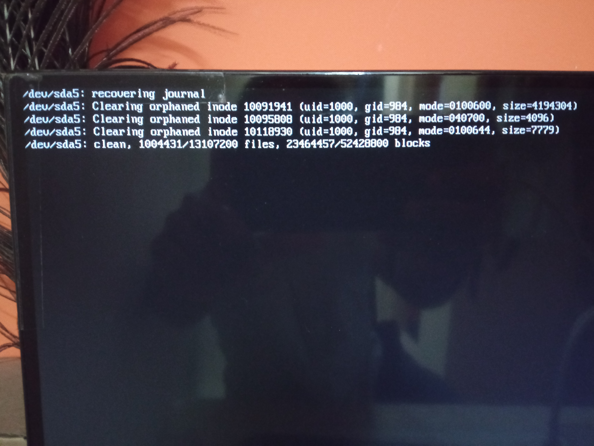
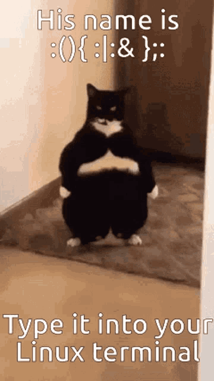
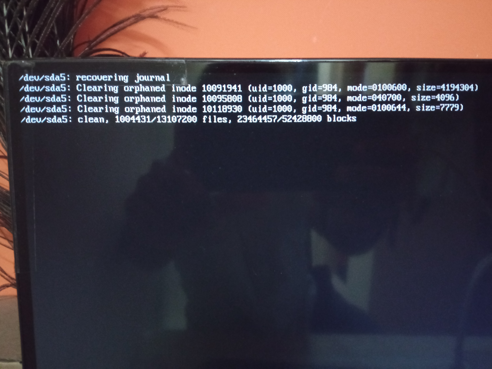

ulimit -u <limit>
That's it for today guys , DYE 👋 !
The following are a few SS from my experience



hey guys n grils , how is it going . Today I was just not feeling upto it
BTW just like last time we have a chinese speggati with lasanga going on for this semester's projects with a minor
one to top it
Showing clear intents of 2FA by enemy of our mortality
P.S: Coming to the main point since I wasn't feeling upto it I fork bombed myself today
Lemme explain :

A fork bomb is one of the many child tricks [ script kiddies ] thing that people could fall for [ skill issue ].
It acutally is a very good command / function / routine that makes your computer eat resources for an invisible
parasite
So what actually happens is not just an infinite loop but an infinite function innovation call
ctrl + c or Sigint formally [ signal interrupt ] won't work since it only applies to
the parent process and the child Could be run in instances that are different than the parent's shell / out of
the parent's shell esentially turning into an orphan . This would render Sigint as null [
but does quit the parent process ]
The fork bomb is just a function defination + invocation infinitely
: is the name of the function() thingy is to hold the parameters / call it as function declaration { we have : :|: that calls the function with name : and pipes the output
| to the same function : :|:
& is the one which send / pushes the command that
was specified before it to the background and continues with the processes further } function close ; : which is the function call which actually
runs the function here . If in case the bomb doesn't start / run , you might be missing this call :(){:|:};: Now let's see how to stop this ?
we can use SIGTERM functions like :
with the pid or name of the process in respective commands
The SIGTERM acutall terminates the whole process including Backgruond processes
The above are ways to handle if medium emergency levels to exercise some amount of restriction
As sometimes it might even stop / not work
If you want surity [ what ever the spelling of sureity is ] then do a SIGKILL using
kill -9 to ensure its complete termination
BTW: kil -2 : SIGINT
kill -15 : SIGTERM
kill -9 : I am not writting everything again just use eyes .
Another way if you have the system in hand prior to exection would be :
<
username > hard nproc <limitOf-numberOfProcesses> ulimit -u <limit>
That's it for today guys , DYE 👋 !
The following are a few SS from my experience
